Our Journey
After witnessing the deplorable quality of education available to children in Majhui Village of Sasaram, Bihar, especially ones belonging to low income families, NANAK decided to start a learning center in the village that would provide remedial education to children free of cost. The learning center consisted of three teachers hired by NANAK who gave instruction in Mathematics, English, Science and General Knowledge and provided sports equipment and games for the general development of children.
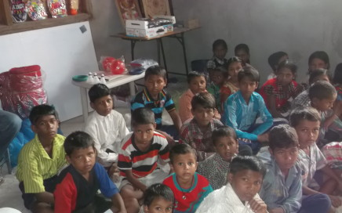
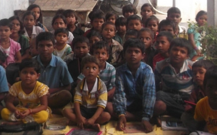
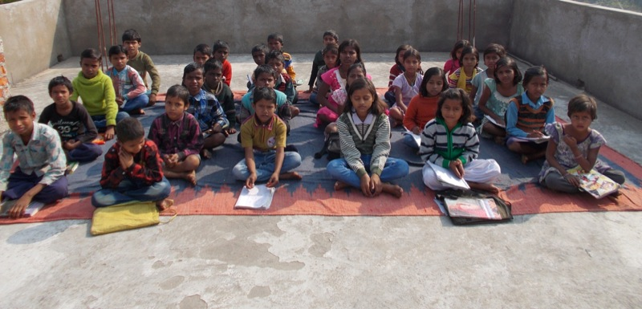
Moving towards a School…
After several visits to the village, members of the NANAK team felt that even though the learning center served a useful purpose and helped the children of Majhui, it was not a substitute for proper schooling. After this realization, our team interacted with students and teachers of the Government School in the village to help understand the problems faced by them and what could be done to address them.
Construction of Dr. RadhikaRaman Public School begins
Eventually our team came to a conclusion that to significantly improve the lives of the children in Majhui and to help them build a better future, not only for themselves, but for the region and the nation as a whole, the provision of quality education was imperative. With this in mind the construction of Dr. RadhikaRaman Public School was undertaken.
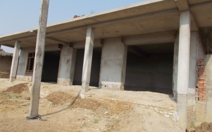
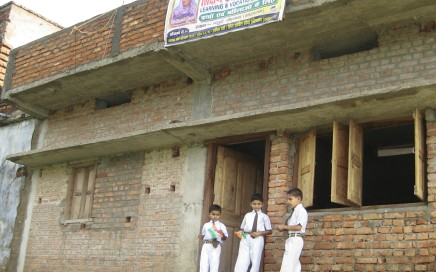
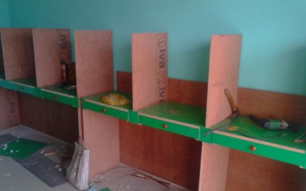
Opening of the School
NANAK sent two members of the team to Majhui from Delhi on a permanent basis to run the newly built school, and hired six teachers from the area after extensive training. The presence of two teachers from Delhi, with good skills in their subjects and command over the english language, the school garnered immense interest from the people in the region. Today, over 100 students are attending the school and it continues to grow, with students from not only Majhui, but from three other neighboring villages attending the school. The school also focuses on holistic development of the students and arranges interactions between the students and community leaders and officials from the region. This practice has not only led to empowering the students and enhancing their personalities, but has also served to bridge the gap between the authorities and the citizenry.
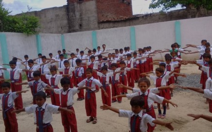
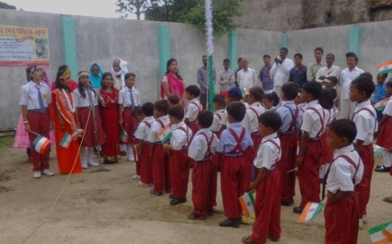
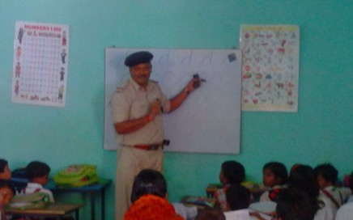
Introduction of Computers and Audio Visual Learning
With the support of our donors and team, NANAK has equipped the school with a projector and 20 computers, an initiative that has got a tremendous response from the local community. On the request of the people in the village, NANAK plans to extend computer training beyond the school students, to the youth in the region.
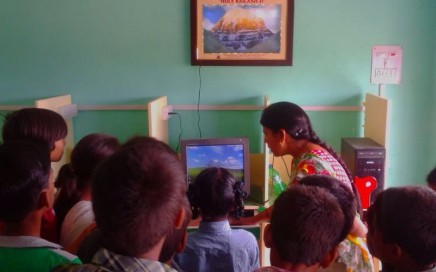
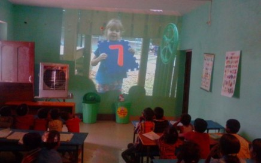
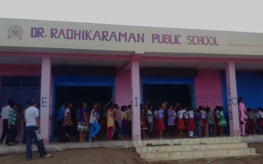
Other Initiatives in the School
In addition to providing quality education to all students in the basic subjects and training all students to be IT literate with the provision of computer education, Dr. RadhikaRaman Public School aims to empower all its students to be morally upright and confident citizens who care for others and the environment. To accomplish this, the school organizes various events, like a tree plantation drive on World Environment Day, special assemblies on Independence Day where India's great history is emphasized and various competitions to ignite students to think creatively about social and environmental problems in their community.
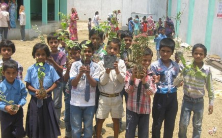
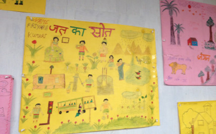
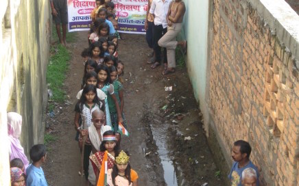